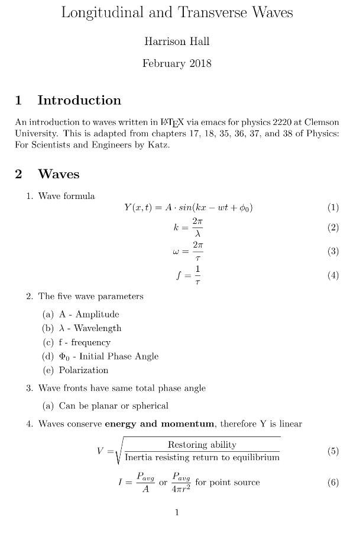
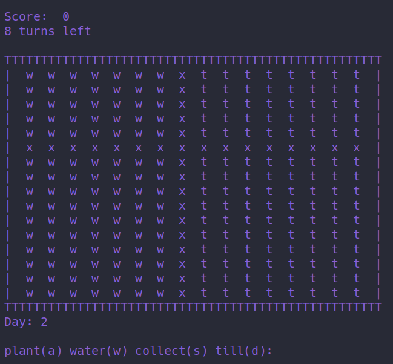

-
Past Projects
Here is a short compilation of some of the projects I have created, or worked on in the past. If a project is on here, it is most likely finished or I do not plan on returning to it in a long time.
-
electrss
This javascript app was written to be used in electron. The electrss app will parse RSS 2.0 and Atom feeds. Colors and style can modified with the config.js and main.css files.

View on Github -
Physics Notes
In an effort to learn LaTeX, I began writing some of my physics notes in the LaTeX language. While some notes are incomplete, notes for Clemson's Physics 2220 and 3110 can be found at the link below.
 View on Drive
View on Github -
Cultivate
Cultivate is an original arcade game programmed in Python 3 for educational purposes optimized for the SenseHat. Won 1st place in the 2017 Horry County Schools Tech Fair in Programming.

Download on DriveFor "fun," I have recreated cultivate using much better coding conventions. It is located on my github below. It only works in the command-line, however. It also allows for various garden sizes.
Clone or Download on Github -
The Trial
Introducing the original text-based adventure game created by Harrison Hall, and Jacky Wong, featuring art from Olga Suchankova. The Trial was created in HTML, CSS, and JavaScript and features a complex branch system to allow you to make your own decisions.
The Trial stars you as the main character in deciding the fate of your hometown, Nubatormenta, as an outworldly ship lingers in the distance. Won 1st place in the 2017 Horry County Schools Tech Fair in Web Design.

Enter the trial -
Ardence
Ardence is a MOBA (multiplayer offline battle arena). Ha. I worked on this project with my good friend Biraj for the 2016 HCS Technology Fair. I worked on art assets and music for the game, along with other creative stuffs. Feel free to download it. I was a junior in high school during this game's creation, so give me slack. Won 1st place in the 2016 Horry County Schools Tech Fair in programming.
Download the game